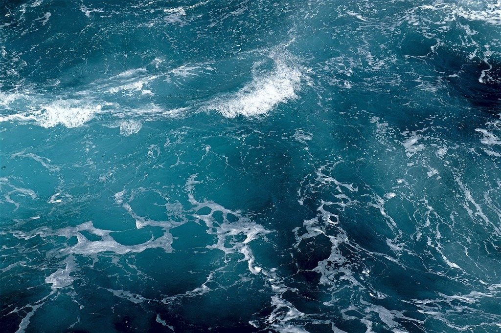
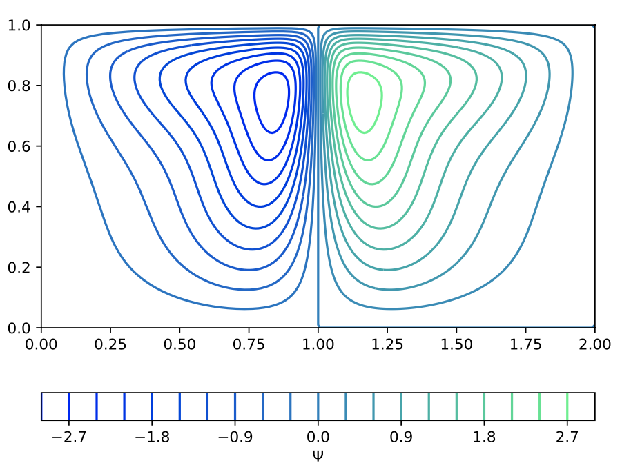
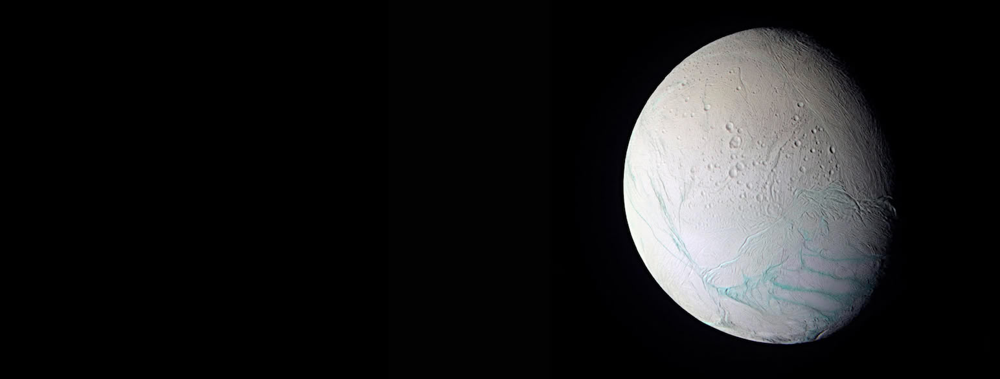
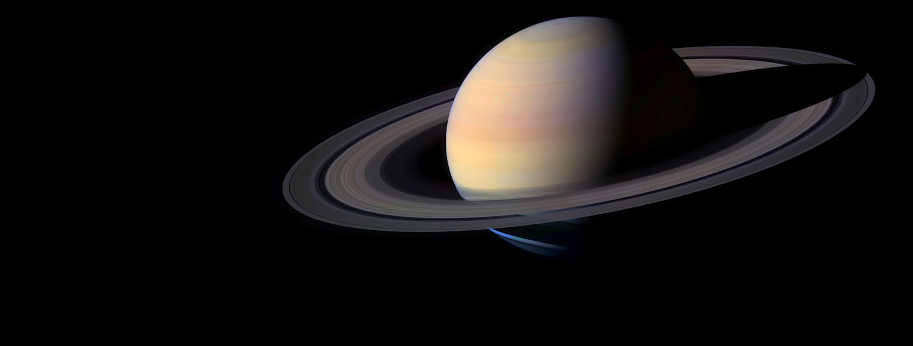
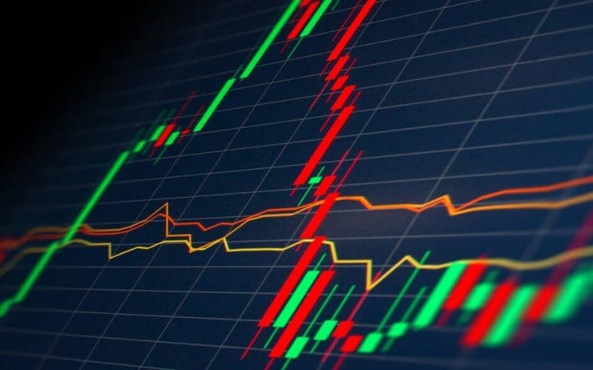
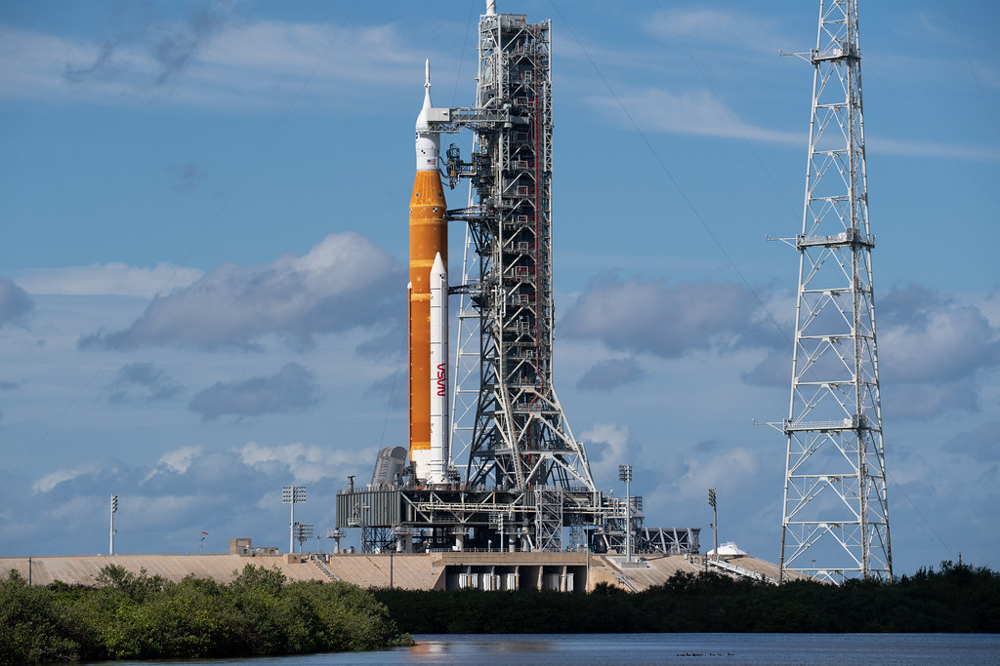
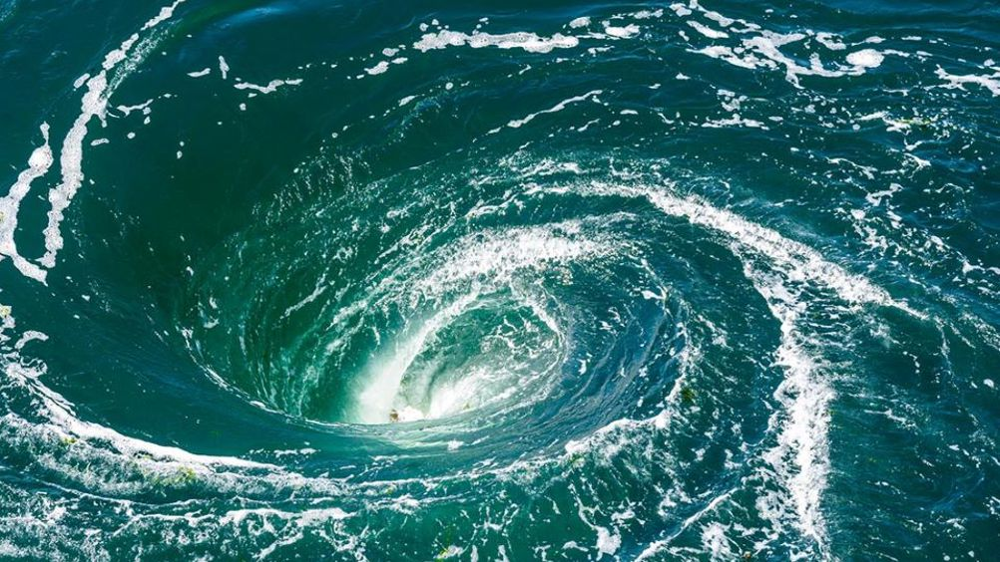
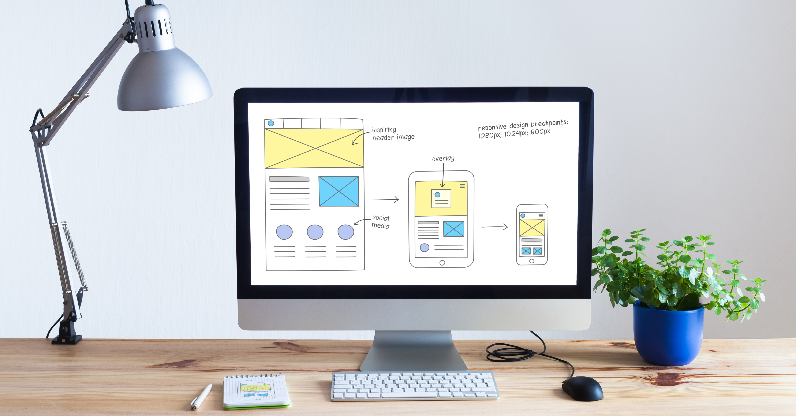
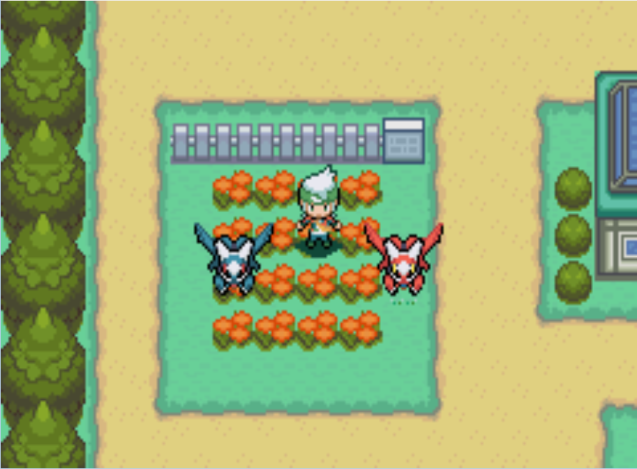
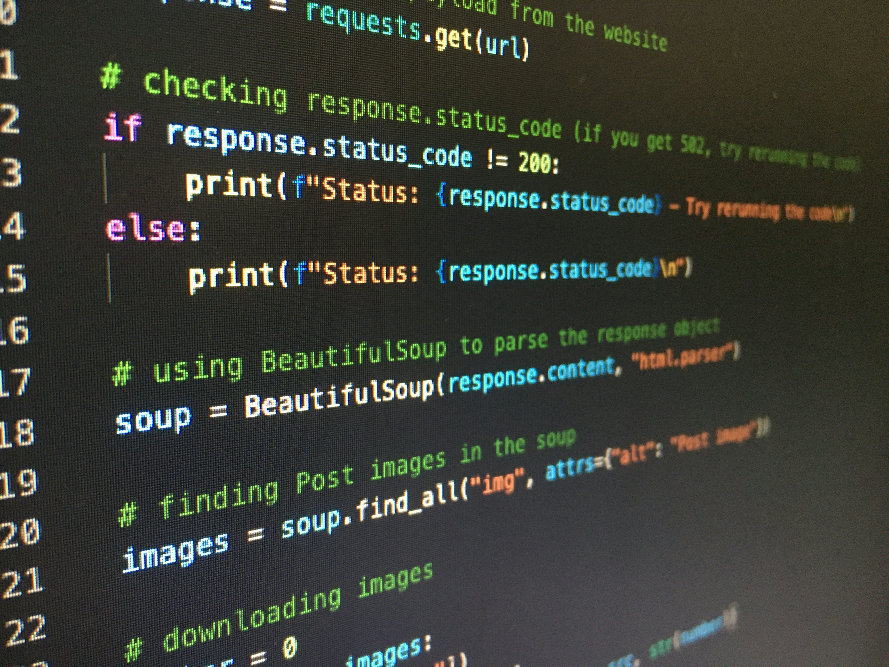

During my final year at university, I had to select a topic to
study for my dissertation. As someone who is passionate about
climate change and sustainable practices, I wanted to complete
my own study on the effects of climate change. I decided to assess
how the circulation of our oceans could be affected under various
levels of freshwater release - and relate this volume of water to a
global temperature increase. This would allow me to see how disrupted
circulation patterns could become as our planet heats up, and I could
compare this with current temperature trends to estimate how long
until we can expect this level of disruption.
I began the project by studying Stommel's simple two-box model
(LINK???? OR IMAGE), which models the circulation between a cold,
fresh box representing polar water, and a warm, salty box representing
equatorial water. After deriving core equations for the behaviour of my
variables I expanded to an N-box model, so I could fit as many separate
'boxes' of water between the pole and equator allowing for a higher
resolution and more detailed results. I tested this model using
current-day ocean data and produced outputs within an acceptable range
of uncertainty.
Once I had validated my model I could begin to conduct my experiments.
I tested changes to circulation patterns under various volumes of freshwater
release, assessing the change to circulation strengths and direction before
drawing conclusions and discussing limitations of my model. One of these
limitations was the level of detail and so I moved to a 2-dimensional model,
including depth in my calculations. Once I had determined my 2D equations and
their solutions, I could run my model using parameters estimated using
real-world ocean data. This produced results representative of observed
circulation and temperature/salinity patterns, validating my model. This
allowed me to again experiment with various levels of freshwater release,
producing results adjacent with my 1D simulations, and observing the true
impact of climate change on our oceans.


Once I had completed my study on Earth's oceans, I decided to apply my model
to other ocean systems - looking at subsurface oceans on the icy moons of Europa
and Enceladus. This is a topic of active research, and as someone with a passion
for studying space I wanted to contribute my own research. By adjusting initial
conditions and parameters, I was able to produce plots of the behaviour of these
subsurface oceans consistent with data from NASA and models developed by the
likes of Lobo and Soderund.
In the future I wish to develop my model using new data from future NASA missions
and extend this study to other celestial bodies. I may also look to apply my model
to other studies including renewable energy (wind and wave power) and species
migration.

I have recently developed a Python programme to simulate motion of orbiting bodies.
It produces plots of various orbits within our solar system using the equation:
The code allows a user to input a body of their choosing and produces an accurate
plot of its orbit using data sourced from NASA's horizon system. I have added
varying colours and orbit times for each body, but plan to add more detail in
future. I want to allow a user to simulate orbits of various satellites, including
an option to add a fully customised orbit. I may also add more bodies including
some exoplanets and other systems outside of our solar system. My next task is to
add an option to produce multiple orbits on one plot and add customisable plotting
options. I may also look at implementing more detailed three-body interactions.

In early 2026 I decided to complete a detailed study of the stock market, an
idea fuelled by my passion for finance. I wanted to begin by revising the
mathematics of random walks and Brownian motion - topics I had studied at
degree level - to model asset prices, before applying some financial ideologies
to produce useful outputs.
First, I simulated the paths of N random walks over n steps, calculating their
mean and variance to be compared to results from theory. A plot of the paths
over time and a histogram of their final positions are useful visualisation tools
to ensure my model works smoothly. I then produced a new script to simulate
Brownian motion of N paths, before validating the model by analysing outputs.
Again, I produced a plot of a sample of paths, a histogram of final values, and
calculations of mean and variance. Additional sanity checks included a check for
independence of variables and a check of incremental mean and variance to ensure
the increments satisfy Brownian motion.
I then modelled asset prices using Geometric Brownian motion, a more realistic
pricing model. GBM is more useful here as prices will always remain positive and
changes to the price of an asset are proportional to its current price - providing
more accurate risk and return assessments. For my model I built paths following
GBM simulated over n time-steps. Again, the model is validated with path plots
and a histogram - this time plotting the log of the final positions to allow for
comparison to a standard Normal distribution. Additional validation comes through
the comparison of the models mean and variance to their analytical 'expected'
values.
Next, I looked to apply this model to some real assets such as European options.
European options give the owner a right to buy or sell stock at a fixed price,
however only on the expiration date of the contract. There are two main types:
a put option gives an owner the right to sell at a fixed price, whilst a call
option gives them the right to buy at a fixed price. The model provides suggested
prices for a call and put option for a strike price, providing a confidence
interval and a visual representation in the form of a histogram, with calculations
computed using a Monte-Carlo pricing scheme.
Finally, I wanted to produce some more meaningful investment indicators and so
used the model to calculate various 'Greeks' - used to measure how the price of a
derivative changes when the model inputs are changed. Here the programme provides the
user with the following Greeks: Delta (sensitivity to changes in spot price),
Gamma (curvature of option price w.r.t spot), Vega (sensitivity to volatility),
Theta (sensitivity to time maturity) and Rho (sensitivity to risk-free interest
rate).
This project helped fuel my education on financial topics and modelling of prices
and options - whilst producing useful tools that I can use in the future. In
future I wish to develop the model's accuracy further by implementing stochastic
volatility models and various path-dependent options, whilst I could also add more
Greeks to further add to the user's arsenal when making investment decisions.

As part of my work to develop my data analysis skills, I conducted an extensive study of large datasets produced by the NASA X Mission.
Last year I was approached with an issue faced by a UK water company - they had
several remote sites, many of which provided inaccurate or limited weather data.
This is damaging to the company as they need accurate weather predictions whenever
they wish to conduct work or training sessions on site. They need data to help
decide when to complete repairs such as cement laying and work on underground
cables/pipes, and since they regularly host training exercises for military and
police teams' accurate data is crucial. A resolution could save a lot of money for
the water company and their collaborators.
As a solution, I came up with the idea to build them a website which takes data from
multiple sources and compiles it to produce an accurate catalogue of past weather data.
Using this I was able to produce more reliable data for up to 20 years in the past in
some postcodes. The app is easy to use and requires a user to simply input a UK postcode
to produce an output. The output is visualised in four tabs, the first two showing data
for variables such as temperature and precipitation in the form of charts and tables. The
third tab contains plots showing the change in monthly averages across the years for which
data is available, allowing a user to look at specific months and variables individually.
The final tab provides a prediction for the future. This data is produced using a machine
learning model, which takes past data and generates a prediction and error range for weather
patterns in the future.
I completed a study of the makeup and behaviour of the atmospheres of various
exoplanets, producing density and velocity plots of the results for analysis.
In future I hope to implement this as part of my own exoplanet app - containing
interactive details of a large database of exoplanets.
In my final year of university, I completed a brief study on the topic of dark
matter and dark energy. I was tasked with producing a 2-page piece of research
on an applied mathematics topic of my choosing - I selected the discovery of
dark matter and dark energy. I conducted extensive research of the topics,
relishing the opportunity to learn about a topic of deep personal fascination,
before completing my report (attached). I began by discussing evidence for dark
matter, talking about the work of Franz Zwicky and including equations to support
reasoning, before moving on to Vera Rubin's study on the rotational velocities
of spiral galaxies. I then moved on to dark energy, where I covered the Friedmann
acceleration equations and Einsteins famous field equations to contextualise the
accelerating expansion of our universe - attributed to the existence of dark
energy.
To produce this report I used LaTeX, a document preparation system in which code
is used to generate high-quality scientific documents. I used this software for
several documents including my THC dissertation and typed notes of my university
studies.

As part of a group project, I was tasked with producing an in-depth report on
vortex point dynamics. Whilst some of this report required notes on basic fluids
and characteristics of flows, I wanted to be able to produce useful plots of different
vortex interactions in Python. Whilst my colleagues worked on other aspects of the
report, I applied my advanced coding skills to this, producing velocity-field diagrams
of simple vortex behaviour - such as vortex coalescence and fission. I then added greater
complexity, producing plots of N vortices, and showcasing the image method - a method used
to predict vortex behaviour when near a solid boundary.
After the completion of this project, I wanted to push myself further and so developed a
programme to simulate vortex interactions and movements in the form of an animation. The code
takes in initial locations and circulations of N vortices, before using the Helmholtz point-vortex
equations to simulate their behaviour (including annihilations) and their resultant paths.

As I worked on more projects, I found that I wanted a place to showcase my work. As a solution, I decided to build my own website portfolio containing details of my achievements. I built the site using HTML, CSS and JavaScript, and started by constructing an initial site layout and colour scheme. After designing a homepage, I continued this aesthetic throughout the additional pages and linked it all together using a navigation bar. All these elements were styled using CSS, giving my site a clean look. I completed the project by typing up content - discussing my projects and skillsets - adding images, links and interactive PDF files to showcase my work.

I have completed several additional projects and have even built a few small games. I built a simple Pokémon game, containing all mechanics of earlier games like Red/Green. I have also built a flappy bird game. I used Python to build a QR code generator, which asks the user to input a size, resolution, and a link for the code - before generating a downloadable code.
To further develop my data analysis skills, I completed studies of some larger datasets. I used Kaggle to source Spotify streaming data, NBA player and team stats, and Premier League team stats - which I then conducted detailed analysis on. For my data analysis I regularly use Python, however, I may occasionally use SQL, R, and Microsoft Excel.

I recently completed a course on coding skills where i developed my skills further.